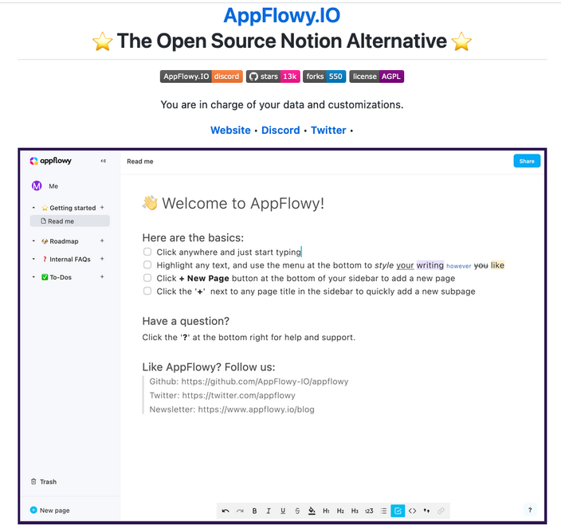
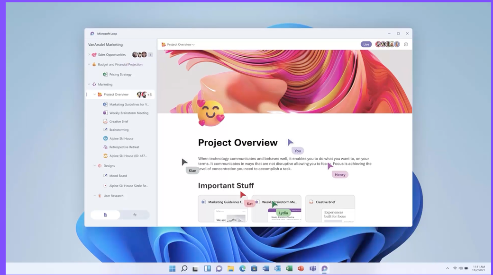
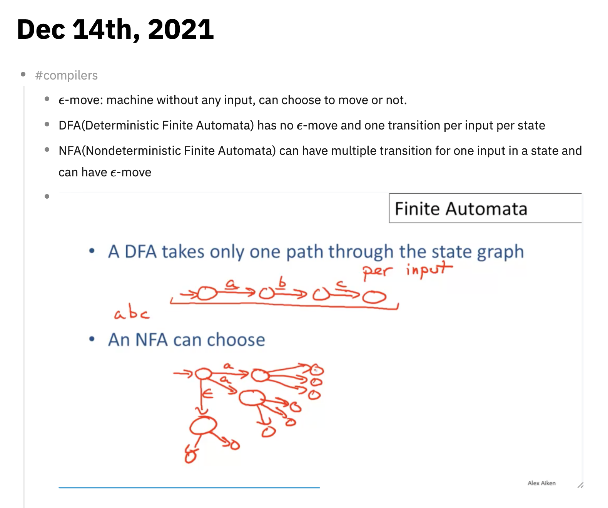
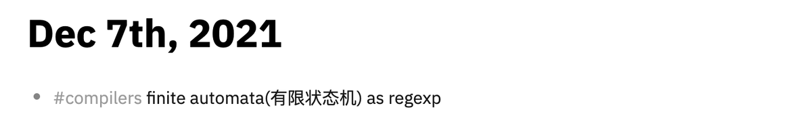
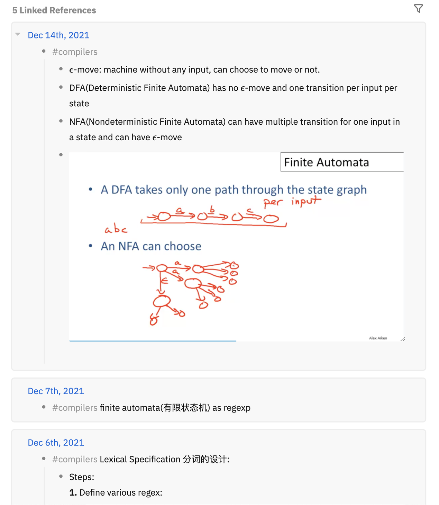

notion很好，所以我选择logseq
今天看到一种说法，叫做现如今（今天是2021年12月16日）所有的笔记软件都在抄 notion 。notion 确实是一款非常成功的笔记软件，但如果仅仅将它作为笔记软件，则是狭隘化了它的用途，我们看看跟它对标的产品：
比如 AppFlowy： 
再比如微软的Microsoft Loop: 
他们除了作为笔记软件以外，更强调 workspace。特别是他们都有类似敏捷开发的TODO， DOING， DONE 的 dashboard， 小型团队使用这样的软件作为它们的计划管理工具和知识共享仓库简直再适合不过。
所以我为什么不再使用Notion了
我将 notion 作为个人的主要笔记软件使用过一段时间，最喜欢的地方是……每一篇文章都可以给我自动生成一个 emoji，看起来非常活泼。但问题也相当明显：
- notion 的使用必须联网；一直保持联网意味着你的数据并不存储在你的本地，如果你的笔记涉及到非常隐私的部分，这让人非常不安心。而且这个逻辑也预设你必须要一直有网络连接，这让我感到非常不愉快。
- notion 没有标准的markdown编辑器。我非常习惯在笔记中嵌入代码，插入引用，加入数学公式，插入超链接……这些在一个标准的markdown 编辑环境非常容易实现而且可以直接在键盘上完成，根本不需要对着菜单的选项点来点去。点击右键，选择插入超链接，粘贴地址，再加上标题这样的操作简直是Microsoft Word的编辑体验。也许它有自己的一套快捷键，但是既然业界已经有标准，为什么还要恶心你？
- 商业化？商业化不是坏事但我觉得开源软件更酷一些。
也有一些别的问题，比如它是一个electron软件（尽管我现在这篇文章就是在同是electron写的vscode上编辑的），这让软件非常重， 而且体验和在浏览器中打开没有区别，几乎没有提升；再比如我觉得它过于强调视觉体验，我并不是说拥有好的设计不好，只是我觉得这模糊了记笔记的焦点。
所以为什么LogSeq
如果我想和其他人共享一个工作空间，共同做点什么项目，我觉得notion 可能依然是一个不错的选择。但我使用的场景仅仅是记笔记，所以我想选择一个更加专一，对我自己而言使用体验更好的软件。
我已经忘记是在哪里看到logseq的推荐了，回过头来，我已经使用logseq超过一个月了。我几乎每天都会在上面写点什么，上述notion 的缺点它都避免了：
- 它支持标准的markdown，同时你也可以单纯将它作为一个索引工具，你可以在特定的文件夹下面使用任何软件编辑你的
.md文件，比如typora或者VSCode。 - 如果你想要同步你的文件，你可以使用自己的网盘或者干脆把github当作你的网盘，它在后台会自动使用git来版本控制你的变更。
- 如果你不想要同步你的文件，比如我在公司记录的业务相关的东西，并不是我自己的东西，所以我不希望它同步，我只需要添加一个本地的文件夹作为另一个分区（在logseq中称为graph）。这样我在家里只看得见我同步的graph，完全不会看见不同步的graph。
- 它是一个开源的项目，而且用Clojure写的，非常酷。
logseq默认记录笔记的地方叫做Journals，写起来就像日记一样，但如果你想要写一个特定主题的东西，你可以新建一个page，这就和普通的软件一样了。但这个Journal最厉害的地方在于，你可以随心所欲记录你想要记录的东西，只需要在前面加上一个类似你在社交网站上加的tag，这样这些tag就会汇集到以这个tag作为标题的页面中去。
比如我最近在学习编译原理，每天临时看到东西会打一个compilers的tag，比如这是14号的笔记：

这是我7号的相关笔记（关于这个主题只记了短短一句话）： 
但是我可以从这个tag点到一个page，这个page囊括了所有我记录这个主题的文字： 
不足
这个产品还在开放中，截至2021年12月16日，这个软件的最新版本号是0.5.4，还是早期的阶段。我之前有看到说这个软件会丢笔记，但我也看到这个软件开发者迅速回应并在当天修复了这个问题。目前来说，这个软件存在的不足之处有：
- 不支持网页clip，这一点做得最成熟的是EverNote。当然我并不是这个功能的重度用户。
- 还没有vim插件。如果有vim插件的话编辑起来的手感一定更舒服，之前我甚至一直都是用typora打开文件记笔记。
If you like my article and want to make a donation, you can click the 捐赠 Donation button on the side bar.